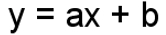
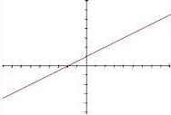

As funções de primeiro grau possuem lei de formação como a seguinte:
OBS: a deve ser diferente de 0.
Gráficos
Os gráficos de uma função de primeiro grau é representado por uma reta.
Ex:
Coeficiente Angular
Em uma função de primeiro grau, o número que corresponde a letra a receberá o nome de coeficiente angular. Será esse que definirá se a função será crescente ou decrescente, sendo que:
- Se a > 0 ( positivo ), a função será crescente;
- Se a < 0 (negativo), a funcao será decrescente.
Coeficiente Linear
Em uma função de primeiro grau, o número que corresponde a letra b receberá o nome de coeficiente linear. Será esse que definirá o ponto em qual a reta cortará o eixo y.
Raiz
Em uma função de primeiro grau, teremos apenas uma raiz, isto é, um único ponto onde a reta cortará o eixo x.